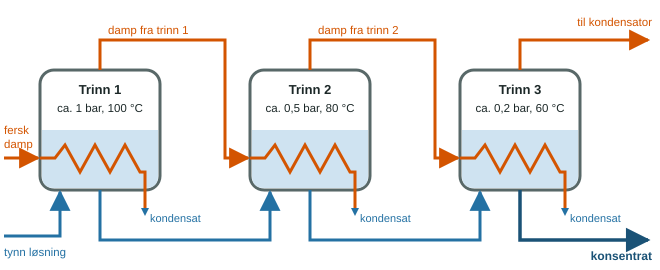

Fordamping og inndamping
Mange produkter lages som en tynn løsning i vann, men skal selges eller brukes videre som en sterk løsning eller et tørt stoff. Da må vannet fjernes. En inndamper koker bort vannet, og den bruker mye energi. Som operatør må du vite hvordan inndamperen er bygd, og hvordan den kan spare energi.
Hva er inndamping?
Fordamping er når væske blir til damp. Det kan skje fra overflaten, også under kokepunktet, slik en vanndam tørker opp. Det kan også skje ved koking. Da dannes det dampbobler inne i hele væsken, og det skjer ved kokepunktet. Begge deler tar mye energi, se Temperatur og varme.
Inndamping betyr å koke bort en del av løsemiddelet, oftest vann, slik at løsningen blir sterkere. Det oppløste stoffet koker ikke bort, men blir igjen. Den sterke løsningen som kommer ut, kalles konsentrat. Eksempler fra industrien:
- melk som dampes inn før den spraytørkes til melkepulver
- juice som dampes inn til konsentrat, så det blir mindre å frakte
- løsninger av salt, sukker eller lut som skal bli sterkere, eller som skal krystallisere
- avløpsvann og prosessvann, der vannet kokes bort og restene samles opp
Hvor mye vann som må kokes bort, regner du ut med en massebalanse på siden Separasjon. Hvor mye energi det krever, står på siden Varme og energi i prosesser. Her ser vi på selve utstyret.
Inndamperen
![Skisse av en inndamper med ett trinn. Nederst er en varmeflate: mange loddrette rør inne i en kappe. Damp kommer inn i kappen fra venstre, og kondensat går ut nederst til venstre. Over rørene står en større beholder, dampseparatoren. Tynn løsning kommer inn i dampseparatoren fra høyre. Væsken koker i rørene, og boblene stiger opp i dampseparatoren. Øverst i dampseparatoren sitter en dråpeutskiller. Vanndampen går ut på toppen og over til en kondensator som kjøles med kjølevann. Fra kondensatoren går kondensat, som er rent vann, ned, og en ledning går til vakuumpumpen. Konsentratet tappes ut i bunnen under rørene.](bilder/inndamper.svg)
En inndamper har fire hoveddeler:
- Varmeflaten er ofte en bunt med rør i en kappe, slik som i en rørkjelvarmeveksler. Løsningen går inne i rørene, og damp på kappesiden varmer dem. Kondensatet fra dampen går ut gjennom en kondenspotte.
- Dampseparatoren er en beholder der vanndampen skilles fra væsken. Løsningen koker kraftig, og dampen river med seg små dråper. I separatoren får dråpene tid til å falle tilbake.
- Dråpeutskilleren sitter øverst i separatoren. Den er ofte et tett nett av metalltråd. Dampen kommer gjennom, men dråpene som er igjen, setter seg fast og renner tilbake.
- Kondensatoren gjør vanndampen om til vann igjen. Det er en kondensator som kjøles med kjølevann.
Konsentratet tappes ut i bunnen. Operatøren holder øye med hvor sterkt konsentratet er, ofte ved å måle tettheten. En sterkere løsning har høyere tetthet. Er konsentratet for tynt, må det dampes inn lenger, for eksempel ved å sende mindre løsning inn eller tilføre mer damp.
Ulike typer inndampere
| Type | Slik virker den | Passer til |
|---|---|---|
| naturlig sirkulasjon | Løsningen koker i korte, loddrette rør. Boblene gjør at væsken stiger opp gjennom rørene og renner ned igjen et annet sted. Den sirkulerer av seg selv. Inndamperen i figuren er av denne typen. | tynne løsninger som ikke legger igjen mye belegg |
| tvungen sirkulasjon | En pumpe sender løsningen raskt gjennom varmeveksleren. Trykket holdes så høyt at løsningen ikke koker før den kommer inn i separatoren. | tykke løsninger og løsninger som danner krystaller eller belegg |
| fallfilm | Løsningen fordeles på toppen og renner ned langs innsiden av lange rør som en tynn film. Vannet fordamper fra filmen på vei ned. | produkter som tåler lite varme, for eksempel melk og juice, fordi løsningen bare er kort tid i varmen |
Vakuuminndamping
Kokepunktet blir lavere når trykket er lavere. Ved ca. 0,2 bar absolutt trykk koker vann allerede ved ca. 60 °C, se Kokepunktet avhenger av trykket. I en vakuuminndamper holdes trykket lavt. Det gir tre fordeler:
- Produkter som tåler lite varme, blir ikke ødelagt. Melk blir for eksempel brun og smaker brent hvis den kokes ved 100 °C lenge.
- Det trengs ikke så varm damp for å varme inndamperen.
- Det blir mindre belegg, fordi belegg ofte dannes raskere ved høy temperatur.
Vakuumet lages mest av kondensatoren. Når dampen blir til vann, tar den nesten ingen plass, og trykket faller. En vakuumpumpe fjerner lufta som lekker inn.
Flertrinnsinndamping: å bruke dampen flere ganger
Det trengs omtrent 1 kg damp for å koke bort 1 kg vann. Inndamping er derfor dyrt. Men vanndampen som kokes av løsningen, er også damp, og den inneholder nesten like mye energi. Den kan brukes til å varme et nytt trinn.

For at dampen fra trinn 1 skal kunne koke løsningen i trinn 2, må løsningen i trinn 2 koke ved lavere temperatur. Det får vi til ved å ha lavere trykk i trinn 2, og enda lavere i trinn 3. Varmen går da hele tiden fra et varmere til et kaldere trinn.
Med tre trinn kokes det bort litt under 3 kg vann per kilo fersk damp, ofte ca. 2,5 kg. Bare dampen fra siste trinn må kjøles bort i kondensatoren. Flere trinn sparer mer energi, men hvert trinn koster penger å bygge. Store anlegg har ofte 3–7 trinn.
En annen måte å spare energi på er å trekke ut dampen fra løsningen med en kompressor. Når dampen presses sammen, blir den varmere, og den kan brukes til å varme den samme inndamperen. Det kalles damprekompresjon, og det virker på samme måte som en varmepumpe.
På siden Separasjon skulle en inndamper koke bort 750 kg/h vann fra en saltløsning. Med ett trinn trengs det omtrent 750 kg/h fersk damp. Med tre trinn trengs det omtrent 750 / 3 = 250 kg/h. Det er tallet vi får hvis vi regner som om hvert kilo damp koker bort ett kilo vann. I virkeligheten blir det litt mer, fordi noe varme går tapt.
Det som kan gå galt
- Belegg: Kalk, salter eller brent produkt legger seg i rørene. Da går mindre varme gjennom, og inndamperen klarer mindre. Den må vaskes jevnlig, ofte med lut og syre, mens den står montert.
- Skum: Noen løsninger, for eksempel melk, skummer når de koker. Skummet kan følge med dampen ut. Det kan dempes ved å tilsette skumdemper eller senke tilførselen.
- Medrivning: Dråper av løsningen følger med dampen over i kondensatet. Da tapes produkt, og kondensatet blir urent. Det kan skje hvis nivået i separatoren er for høyt, eller hvis det koker for kraftig. Laben kan oppdage det ved å måle ledningsevnen i kondensatet. Rent vann leder strøm dårlig, så høy ledningsevne betyr at det er salter i kondensatet.
- Vakuumet faller: Lekker det inn luft, eller kjøler kondensatoren for dårlig, stiger trykket. Da stiger også kokepunktet, og det kokes bort mindre vann.
- Damp og varme flater: Inndamperen har damp under trykk og varme flater. Damp gir alvorlige brannskader.
- Vakuum: Utstyr under vakuum kan klappe sammen hvis det er svekket. Åpne aldri en luke eller en flens på en inndamper under vakuum. Luft må slippes inn kontrollert etter prosedyren.
- Konsentratet kan være mye mer etsende enn den tynne løsningen, for eksempel sterk lut. Bruk verneutstyret som sikkerhetsdatabladet krever når du tar prøver.
- Vasking: Lut og syre brukes til å vaske inndamperen. Følg prosedyren, og bruk verneutstyr.
- Før inndamperen åpnes, skal den være stengt, tømt, trykkutjevnet og avkjølt, og sikret med lås og merk.
Test deg selv
1. Hva er hensikten med inndamping?
- Å varme opp en løsning før den går til en reaktor
- Å koke bort en del av løsemiddelet, slik at løsningen blir sterkere
- Å kjøle ned damp slik at den blir væske
I en inndamper kokes vannet bort, mens det oppløste stoffet blir igjen. Løsningen som kommer ut, er et konsentrat.
2. Hvorfor dampes melk inn under vakuum?
- Fordi melk ikke kan koke ved vanlig trykk
- Fordi melken da koker ved lav temperatur og ikke blir brent
- Fordi vakuum gjør at det trengs mer damp
Ved lavt trykk er kokepunktet lavere. Melken kan da koke ved for eksempel 60 °C i stedet for 100 °C, og den tar ikke skade av varmen.
3. Hva gjør dråpeutskilleren i en inndamper?
- Den hindrer at dråper av løsningen følger med dampen ut.
- Den slipper kondensatet ut av kappen.
- Den fordeler løsningen på toppen av rørene.
Dampen kommer gjennom nettet, men dråpene setter seg fast og renner tilbake. Uten dråpeutskiller kan produkt komme over i kondensatet.
4. Hvorfor sparer en inndamper med tre trinn energi?
- Fordi hvert trinn har en egen dampkjel
- Fordi løsningen kokes tre ganger så lenge
- Fordi dampen som kokes av i ett trinn, brukes til å varme neste trinn
Bare trinn 1 trenger fersk damp. Dampen fra trinn 1 varmer trinn 2, og dampen fra trinn 2 varmer trinn 3. Da kokes det bort litt under 3 kg vann per kilo fersk damp.
5. Laben måler høy ledningsevne i kondensatet fra en inndamper for saltløsning. Hva betyr det?
- At kondensatet er ekstra rent
- At dråper av saltløsningen har fulgt med dampen over i kondensatet
- At inndamperen har for lite damp
Rent vann leder strøm dårlig. Høy ledningsevne betyr at det er salter i kondensatet. Det kalles medrivning og kan skyldes for høyt nivå i separatoren eller for kraftig koking.
Ordliste
| Begrep | Forklaring | Engelsk |
|---|---|---|
| fordamping | Overgangen fra væske til damp. Den kan skje fra overflaten under kokepunktet eller ved koking. | |
| inndamping | Å koke bort en del av løsemiddelet, oftest vann, slik at en løsning blir sterkere. | evaporation |
| inndamper | En beholder der en løsning varmes slik at vannet koker bort og løsningen blir mer konsentrert. | evaporator |
| konsentrat | Den sterke løsningen som blir igjen når noe av løsemiddelet er fjernet, for eksempel i en inndamper. | |
| dampseparator | Beholderen i en inndamper der vanndampen skilles fra væsken. | vapour separator |
| dråpeutskiller | Et nett eller en plate som fanger opp dråper fra en dampstrøm, slik at de ikke følger med dampen ut. | demister |
| fallfilminndamper | En inndamper der løsningen renner ned langs innsiden av lange rør som en tynn film og vannet fordamper på veien. | falling film evaporator |
| vakuuminndamper | En inndamper med lavt trykk, slik at løsningen koker ved lav temperatur. | vacuum evaporator |
| flertrinnsinndamper | En inndamper med flere trinn etter hverandre, der dampen fra ett trinn varmer neste trinn. | multiple-effect evaporator |
| damprekompresjon | Å presse sammen dampen fra en inndamper med en kompressor, slik at den blir varmere og kan varme inndamperen på nytt. | mechanical vapour recompression (MVR) |
| medrivning | Når dråper av væsken blir revet med av dampen og følger med ut. | entrainment |
Les mer
- Separasjon (Fysiske prinsipper): massebalansen for en inndamper.
- Varme og energi i prosesser (Fysiske prinsipper): regn ut energien som trengs for å koke bort vann.
- Tørking og krystallisering: hva som skjer med konsentratet etterpå.
- Kjøling og kondensering: kondensatoren og dampoppvarming.
Om kildene: Teksten, eksemplene og figurene på denne siden er laget for dette nettstedet, og tallene er eksempler. Siden bygger på undervisningsopplegg i kjemiprosess- og laboratoriefag ved Sauda vgs, som er utarbeidet med utgangspunkt i blant annet Kjemien stemmer, Laboranten og åpne nettkilder.